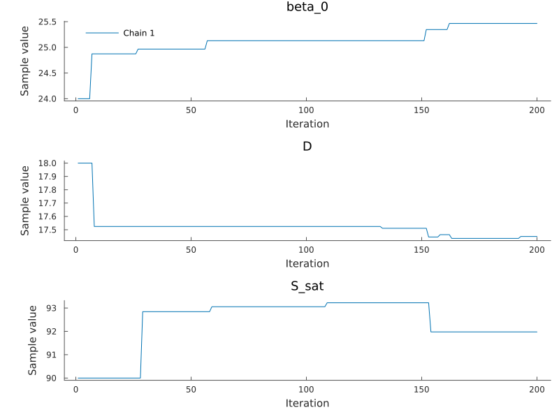

Inference
Simon Frost
Overview
The paper estimates the parameters by Bayesian inference under uniform priors, with two samplers: a component-wise Metropolis–Hastings algorithm and adaptive multiple importance sampling (AMIS). This vignette builds the posterior of the paper’s reduced model and runs short versions of both, then shows the Turing.jl interface. A likelihood takes about a second, so the runs here are far too short for real estimates; they show the workflow.
Setup
using AshDieback
using AbstractMCMC
using MCMCChains
using LinearAlgebra
using LogDensityProblems
using Random
using Plots
data = load_peoc_data()
θ0 = AshDiebackParameters([1000.0, 0.0, 24.0, 0.0, 18.0, 90.0, 21.50001, 1.0, 0.0085, 0.05])
prob = AshDiebackProblem(data, θ0)AshDiebackProblem: survey years 2008:2019, T28 temperature index
p = (r_symp = 1000.0, r_allee = 0.0, beta_0 = 24.0, beta_1 = 0.0, D = 18.0, S_sat = 90.0, gamma = 21.50001, C_pers = 1.0, C_init = 0.0085, kappa = 0.05)The posterior
The reduced model (eq. 13 of the paper) has no Allee effect and no rainfall effect, fixes γ and Cpers, and estimates β₀, D, S, Cinit and κ:
post = AshDiebackPosterior(prob, reduced_model_prior_ranges())
free_parameters(post)5-element Vector{Symbol}:
:beta_0
:D
:S_sat
:C_init
:kappapost is a LogDensityProblems.jl log density over the free parameters:
x0 = θ0[post.free]
LogDensityProblems.logdensity(post, x0)-24747.687122819294Metropolis–Hastings
PEOC’s sampler updates one parameter per iteration with a gamma proposal centred on its current value (shape 200, so a standard deviation of 7 % of the value):
spl = ComponentwiseGammaMH(post)
chain = sample(Xoshiro(1), post, spl, 200; initial_params = x0, chain_type = Chains,
progress = false)Chains MCMC chain (200×7×1 Array{Float64, 3}):
Iterations = 1:1:200
Number of chains = 1
Samples per chain = 200
parameters = beta_0, D, S_sat, C_init, kappa
internals = lp, accepted
Use `describe(chains)` for summary statistics and quantiles.Trace plots of three of the parameters (MCMCChains’ default plot adds density plots, which need StatsPlots.jl):
plot(chain[:, [:beta_0, :D, :S_sat], 1]; seriestype = :traceplot, size = (800, 600))
AMIS
AMIS draws batches from a Gaussian proposal, weights all draws so far against the mixture of the proposals used, and moves the proposal to the weighted mean and covariance. The paper’s initial proposal for the T28 index (its Table 2) has these variances:
Σ0 = Diagonal([3.0, 0.4, 1.0, 1e-8, 1.5e-5])
res = amis(Xoshiro(2), post, x0, Matrix(Σ0); iterations = 3, samples = 40)
res.means[end]5-element Vector{Float64}:
23.757714698480207
18.35221796563086
90.82809512972419
0.00853446963586239
0.04698373744905713With several threads (julia --threads=auto) the likelihoods of a batch are evaluated in parallel.
Turing
turing_model(post) gives the same posterior as a Turing.jl model, so Turing’s samplers and tools apply. The likelihood has no useful gradient, so use a gradient-free sampler:
using Turing
model = turing_model(post)
Turing.DynamicPPL.logjoint(model, (; θ = x0)) ≈ LogDensityProblems.logdensity(post, x0)true